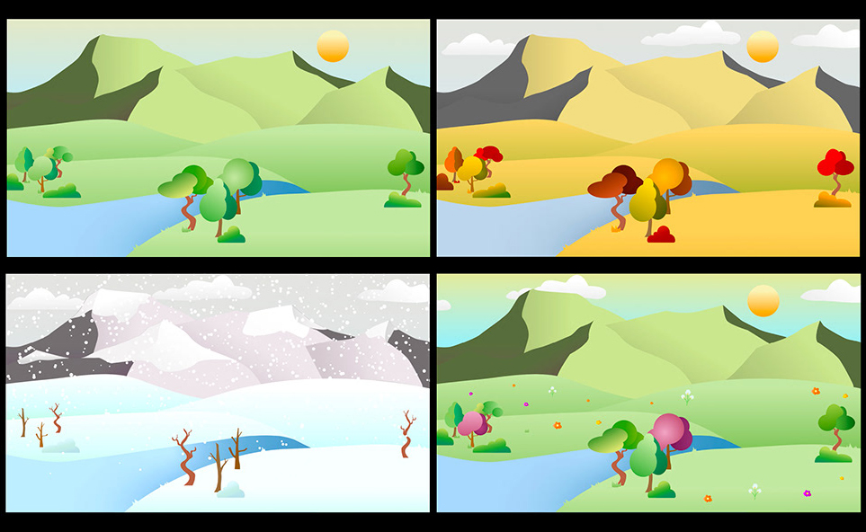

The North Face - Projection Mapping
A motion design concept visualizing The North Face's all-season versatility through projection mapping. Animated seasonal transitions reveal brand adaptability across environments, climates, and lifestyles.
Concept & Strategy
Developed projection mapping concept that showcases The North Face's ability to thrive in any environment. The design uses four seasonal transitions to tell the brand story, with each season revealing a distinct color palette and atmosphere while progressively building the iconic quarter-circle logo.

Illustration & Visual Design
Created detailed seasonal illustrations showcasing diverse environments and lifestyles. Each illustration reflects The North Face's core values while maintaining a cohesive visual style. Designed environments that progressively build toward the final logo reveal.

Animation & Motion Design
Animated seasonal transitions with dynamic, immersive visuals. Each environment seamlessly flows into the next while progressively filling segments of the logo. Created smooth transitions that emphasize The North Face's adaptability and resilience across all seasons.
Projection Mapping & Audio Design
Mapped animations onto a physical quarter-circle logo object to create an immersive brand experience. Synchronized audio throughout to support visual transitions and enhance emotional impact. The final frame completes the full logo, reinforcing brand identity and adaptability.
Final Output
Complete projection mapping experience showing The North Face's versatility across all seasons and environments.
Project Overview
8 weeks
Reliability, Innovation, Sustainability
Projection Mapping Video
Illustrator, After Effects, TouchDesigner
Production Workflow
Adobe Illustrator
Created detailed seasonal illustrations and visual assets with vibrant color palettes
Adobe After Effects
Animated transitions between seasons and built complex motion graphics sequences
Adobe Audition
Edited and synchronized sound design to enhance visual transitions and emotional impact
TouchDesigner
Mapped animations onto the 3D logo structure and controlled the final projection output